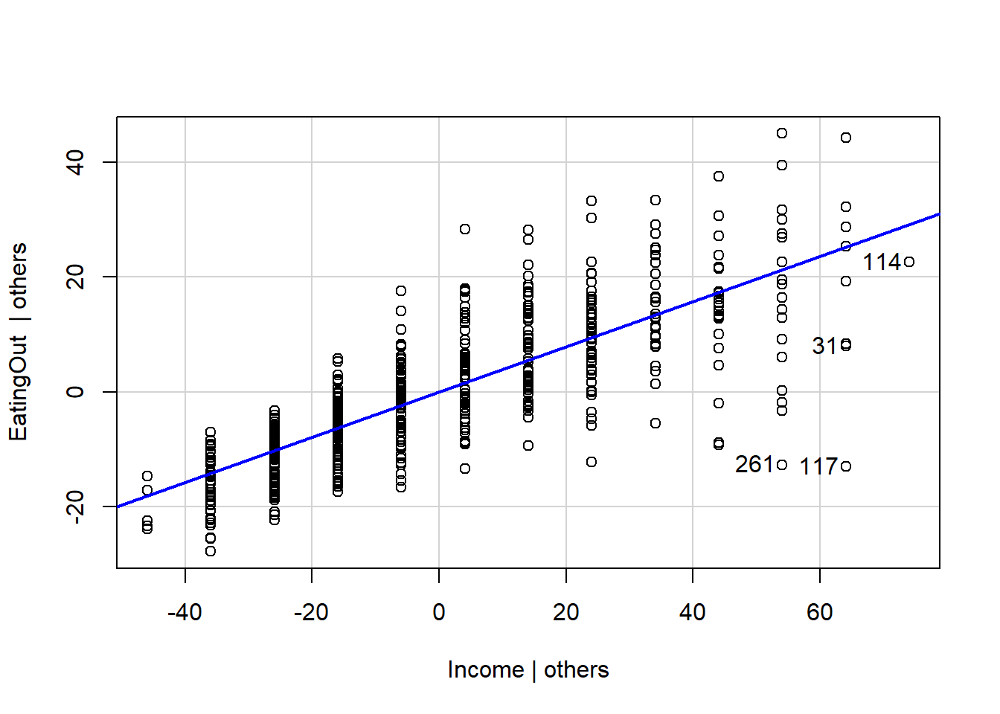
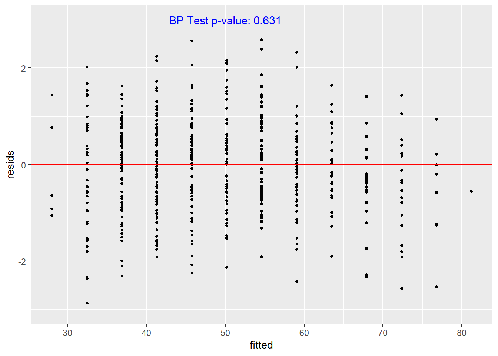

Warning: package 'gamlss.data' was built under R version 4.4.3
Attaching package: 'gamlss.data'
The following object is masked from 'package:datasets':
sleep
Loading required package: gamlss.dist
Warning: package 'gamlss.dist' was built under R version 4.4.3
Loading required package: nlme
Attaching package: 'nlme'
The following object is masked from 'package:dplyr':
collapse
Loading required package: parallel
********** GAMLSS Version 5.5-0 **********
For more on GAMLSS look at https://www.gamlss.com/
Type gamlssNews() to see new features/changes/bug fixes.
food <- vroom::vroom("FoodExpenses.txt")
Registered S3 method overwritten by 'bit':
method from
print.ri gamlss
Rows: 523 Columns: 2── Column specification ────────────────────────────────────────────────────────
Delimiter: " "
dbl (2): Income, EatingOut
ℹ Use `spec()` to retrieve the full column specification for this data.
ℹ Specify the column types or set `show_col_types = FALSE` to quiet this message.
# make heteroskedastic mdl using gamlsshet_food <-gamlss(formula = EatingOut ~ Income, sigma.formula =~., data = food)
GAMLSS-RS iteration 1: Global Deviance = 3520.803
GAMLSS-RS iteration 2: Global Deviance = 3507.17
GAMLSS-RS iteration 3: Global Deviance = 3507.09
GAMLSS-RS iteration 4: Global Deviance = 3507.089
Check Assumptions
car::avPlots(lm(EatingOut ~ Income, data = food))

std_resids <-residuals(het_food, what ="z-scores")
Warning in ks.test.default(std_resids, "pnorm", mean = 0, sd = 1): ties should
not be present for the one-sample Kolmogorov-Smirnov test
Asymptotic one-sample Kolmogorov-Smirnov test
data: std_resids
D = 0.027913, p-value = 0.8098
alternative hypothesis: two-sided
lm_df <-tibble(fitted =fitted(het_food),resids = std_resids)bp_pval <- lmtest::bptest(std_resids~Income, data = food)$p.valuebp_str <-paste0('BP Test p-value: ',round(bp_pval,3))ggplot(data = lm_df, aes(x = fitted, y = resids))+geom_point(alpha =1, size =1)+ylim(-3,3)+geom_hline(yintercept =0, color ='red')+annotate("text",x =50, y =3,label = bp_str,size =4,color ="blue" )
Warning: Removed 2 rows containing missing values or values outside the scale range
(`geom_point()`).

r_2 <-cor(food$EatingOut, fitted(het_food))^2r_2
[1] 0.6258091
Main Conclusions - Questions
Describe the primary conclusions about the relationship between income and food expenditures. What relationships did you find?
The National Restaurant Association hired me to investigate how household income influences consumer spending on food away from home, a key component in understanding future restaurant demand. Using data from the Food Demand Survey (FooDS), which includes annual household income and weekly expenditures on eating out, this project examines whether restaurant food behaves as a “normal good” that is, whether spending increases as income rises. Beyond assessing this basic relationship, the analysis also considers how variability in spending among higher‑income households and shifting preferences for convenience or food quality may shape broader market trends. The goal is to provide financial advisers with clear, regression‑based insights that can inform projections of restaurant demand and guide strategic planning for business growth in an evolving economic landscape.
The advisers specifically hypothesize that a “healthy” restaurant economy should see increases of about $0.50 or more per week for each $1000 increase in income. Based on the data you have, do you think this is a healthy economy?
# --- GAMLSS model ---# Mean: mu = beta0 + beta1 * Income# Sigma: log(sigma) = theta0 + theta1 * Income (default link for sigma is log)fit <-gamlss(formula = EatingOut ~ Income,sigma.formula =~ Income, # allow heteroskedasticity with incomedata = food)
GAMLSS-RS iteration 1: Global Deviance = 3520.803
GAMLSS-RS iteration 2: Global Deviance = 3507.17
GAMLSS-RS iteration 3: Global Deviance = 3507.09
GAMLSS-RS iteration 4: Global Deviance = 3507.089
# --- Extract slope (beta1) and its SE from the mean equation ---b1 <-unname(coef(fit, what ="mu")["Income"])V_mu <-vcov(fit, what ="mu")se_b1 <-sqrt(diag(V_mu))["Income"]# --- One-sided Wald test: H0: beta1 = 0.50 vs H1: beta1 > 0.50 ---b_star <-0.50z_val <- (b1 - b_star) / se_b1p_val <-pnorm(z_val, lower.tail =FALSE) # upper-tail p-value for beta1 > 0.50# --- 95% CI for beta1 (two-sided) ---z_975 <-qnorm(0.975)ci95 <-c(b1 - z_975 * se_b1, b1 + z_975 * se_b1)# --- Report ---cat("\n--- Healthy Economy Test (GAMLSS) ---\n")
--- Healthy Economy Test (GAMLSS) ---
cat(sprintf("Estimated slope (beta1): %.3f $/week per $1,000 income\n", b1))
Estimated slope (beta1): 0.443 $/week per $1,000 income
cat(sprintf("Standard error: %.3f\n", se_b1))
Standard error: 0.014
cat(sprintf("95%% CI for beta1: [%.3f, %.3f]\n", ci95[1], ci95[2]))
cat(sprintf("z = %.3f, p = %.4f\n", z_val, p_val))
z = -4.077, p = 1.0000
if (p_val <0.05) {cat("Conclusion: Evidence that the increase EXCEEDS $0.50 → Healthy economy.\n")} else {cat("Conclusion: Not enough evidence that the increase exceeds $0.50.\n")}
Conclusion: Not enough evidence that the increase exceeds $0.50.
Advisers are expecting incomes to generally shift upward in time (income generally increases by 3-4% each year). Make sure you provide some predictions on what an upward shift in income over the next 5 years or so could do to food expenditures (including the variance not just the amount spent on EatingOut).
#im not sure this is right. I'm thinking of a perfecnt increase as increase by one.035 but Im not so sure about it. It doesnt seem to connect perfectlty to a 1 unit increase. I think it depends on how many units we have to start# 3-4% by year is essentiall 1.035 * B or B*.035 increasebeta_inc <-coef(het_food, what ="mu")["Income"]theta_inc <-coef(het_food, what ="sigma")["Income"]eat_increase <- .035* beta_inceat_sd <- .035* theta_incprint("Yearly increase")
[1] "Yearly increase"
print(eat_increase)
Income
0.01550608
print("sd increase")
[1] "sd increase"
print(eat_sd)
Income
0.0004753301
Modeling Details
Justify your hiring by showing that standard regression models won’t work for this situation so they needed to hire you and should hire you again.
Describe this new “advanced” model you are using in mathematical detail and how you used it to arrive at the conclusions you came to in the following section. In doing so, these advisers Food Expenditures Consulting Problem Background n = 523 don’t know linear algebra so try to avoid that if possible.
Justify (i.e validate) that this model is a trustworthy model for the answers you wrote in the previous section.